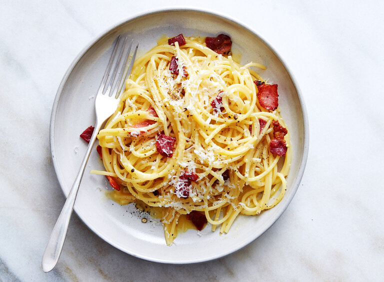

Carbonara

Description
Carbonana is a classic italian pasta dish that is super easy to make. Its
crispy bits of pork, peppery bite and rich cheese sauce make it a staple
in every cook's recipe book. With the right substitutions, it can even be
made on a budget!
Ingredients
- 1/2 lb thick cut bacon
- 3 whole eggs
- 1 egg yolk
- 4 oz parmesan
- 2 cloves of garlic (optional)
- 16 oz pasta
- Ground black pepper
- Kosher salt
Instructions
- Cut bacon into pieces that are a little larger than bite sized (they will shrink while they are cooking.)
- Place bacon onto a cold pan. Set the pan on medium heat and cook until bacon is done. Optionally, add garlic to pan
and let it cook for about 30 seconds.
- Once bacon is done cooking, strain most of the grease leaving about 2 tablespoons left in the pan
- Combine eggs and egg yolks in a bowl
- Add cheese and pepper to egg mixture, stir with a fork until homogenous
- Add pasta to a pot, add water, and cook accoring to the box instructions
- Save about 1/3 cup of starchy pasta water. Drain pasta.
- Add pasta and then egg-cheese mixture to the pan with bacon. (If need be, add bacon and mixture to
the pot of pasta.)
- Add pasta water until desired consistency